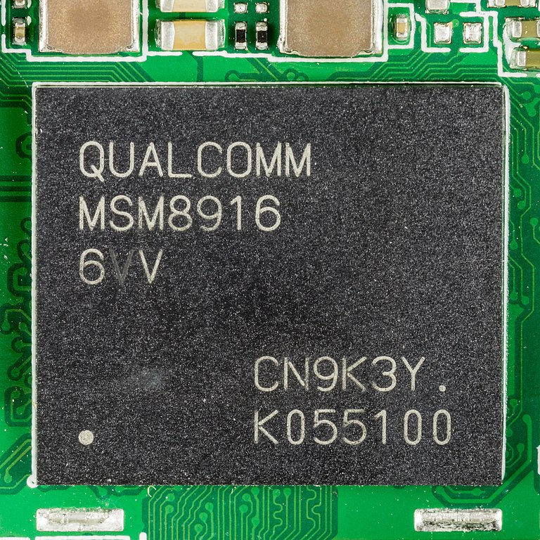

Qualcomm Snapdragon 410/412 (MSM8916)
|
 MSM8916 in ceramic BGA package | |
| Manufacturer | Qualcomm |
|---|---|
| Name | MSM8916 |
| Architecture | aarch64 |
| CPU | 4x 1.2/1.4 GHz ARM Cortex-A53 |
| GPU | Adreno 306 |
| Year | 2014 |
| Process | 28nm |
| Mainline | yes |
| Community Page | https://github.com/msm8916-mainline |
| Components | |
| CPU |
Works
|
| UART |
Works
|
| Storage |
Works
|
| USB |
Works
|
| Display |
Works
|
| GPU |
Works
|
| Pinctrl |
Works
|
| I²C |
Works
|
| Audio |
Works
|
| Video |
Works
|
| Thermal |
Works
|
| WiFi |
Works
|
| Bluetooth |
Works
|
| Modem |
Works
|
| GPS |
Works
|
| Camera |
Partial
|
| Suspend | |
MSM8916/APQ8016 (or Snapdragon 410) is Qualcomm SoC released in 2014, with great mainline Linux support originally added for the Dragonboard 410c. There is a slightly higher clocked variant (CPU cores up to 1.4 GHz) available as Snapdragon 412.
Devices
MSM8916 (Snapdragon 410)
| Device | Codename | Mainline | Category |
|---|---|---|---|
| Alcatel Idol 3 (4.7") | alcatel-idol347 | Y | testing |
| ARK Benefit A3 | ark-peach | Y | testing |
| ASUS ZenFone 2 Laser (720p) | asus-z00l | Y | testing |
| Asus Zenfone Max | asus-z010d | Y | testing |
| Huawei Ascend G7 | huawei-g7 | Y | testing |
| Huawei Y635 | huawei-y635 | Y | testing |
| Lenovo A6000 | lenovo-a6000 | Y | community |
| Lenovo A6010 | lenovo-a6010 | Y | community |
| LG K10 | lg-m216 | Y | testing |
| LG Spirit 4G LTE | lg-c70n | P | testing |
| Motorola Moto E (2nd Gen) | motorola-surnia | Y | testing |
| Motorola Moto G 2015 | motorola-osprey | Y | testing |
| Motorola Moto G4 Play | motorola-harpia | Y | community |
| Samsung Galaxy A3 (2015) | samsung-a3 | Y | community |
| Samsung Galaxy A5 (2015) | samsung-a5 | Y | community |
| Samsung Galaxy Core Prime LTE | samsung-coreprimelte, sm-g360f | Y | testing |
| Samsung Galaxy E7 | samsung-e7 | Y | community |
| Samsung Galaxy Grand Max | samsung-grandmax | Y | testing |
| Samsung Galaxy Grand Prime | samsung-gprime, samsung-gprimeltecan, samsung-gprimeltexx, samsung-fortuna3g, samsung-fortunaltezt | Y | testing |
| Samsung Galaxy J3 2016 | samsung-j3, samsung-j3ltetw | Y | testing |
| Samsung Galaxy J5 (2015) | samsung-j5 | Y | testing |
| Samsung Galaxy J5 (2016) | samsung-j5x | Y | testing |
| Samsung Galaxy On7 (2015) | samsung-o7 | Y | testing |
| Samsung Galaxy S4 Mini Value Edition | samsung-serranove | Y | community |
| Samsung Galaxy Tab A 8.0 (2015) | samsung-gt58 | Y | community |
| Samsung Galaxy Tab A 9.7 (2015) | samsung-gt510 | Y | community |
| Wileyfox Swift | wileyfox-crackling | Y | community |
| Xiaomi Redmi 2 | xiaomi-wt88047 | Y | community |
APQ8016 (Snapdragon 410, WiFi-only)
| Device | Codename | Mainline | Category |
|---|---|---|---|
| Arrow DragonBoard 410c | arrow-db410c | Y | community |
| Samsung Galaxy Tab 4 10.1 (2015) | samsung-matisseve | Y | testing |
| Samsung Galaxy Tab E 9.6 (SM-T560NU) | samsung-gtelwifiue | Y | testing |
The WiFi-only variant gt58wifi of samsung-gt58 is APQ8016.
The WiFi-only variant gt510wifi of samsung-gt510 is APQ8016.
MSM8916v2 (Snapdragon 412)
| Device | Codename | Mainline | Category |
|---|---|---|---|
| BQ Aquaris X5 | bq-paella | Y | community |
Installation
All MSM8916 devices in postmarketOS use lk2nd as secondary bootloader. It does not replace the stock bootloader. Instead, it is flashed in place of an Android boot image, so that the stock bootloader will first load lk2nd instead of a regular Linux kernel. The advantage of this approach is that there is a consistent installation procedure for all MSM8916 devices (once lk2nd was installed), and various device-specific quirks can be handled within lk2nd.
Installing lk2nd

{kind=link}
| Note: lk2nd makes some checks to show device status and capabilities of the firmware such as secure-boot status. Those are informational and you shouldn't be worried if some are marked not as in the screenshot above. |
The instructions for installing lk2nd vary from device to device, so please check your device wiki page for instructions. Once you have lk2nd installed and working, you can proceed with the common installation procedure documented below.
| Please make sure that you are always updated to the latest lk2nd. It makes various preparations to boot upstream Linux kernel and often gets changed alongside the kernel releases as development continues. Your device may have degraded support if you boot newer kernel version on an outdated lk2nd so it's advised to check for new lk2nd updates whenever you see new kernel package release. |
Installation from pre-built image
The MSM8916-based devices in the community category (see table above) have pre-built images that can be easily installed without pmbootstrap. There are different images (e.g. Phosh or Plasma Mobile) to choose from and they are updated every week. If you want more control about the installation (e.g. no proprietary firmware, different UI, extra packages, ...) consider using the pmbootstrap installation method instead (documented further below).
Choose an image for your device from the download page.
Pick the latest date, choose UI between the ones that are available and download the rootfs image file only (since lk2nd 0.10.0 you don't need the legacy *-boot.img image any more):
<date>-<release>-<ui>-<device>-mainline-modem.img.xz
Unpack this file (unxz *-<device>-*.img.xz) and with phone in "lk2nd mode" flash it to userdata partition. Do not forget to erase system partition to prevent accidental booting from it. For example:
$ unxz --keep 20210202-0502-postmarketOS-edge-plasma-mobile-3.2-samsung-a5lte-mainline-modem.img.xz $ fastboot flash userdata 20210202-0502-postmarketOS-edge-plasma-mobile-3.2-samsung-a5lte-mainline-modem.img $ fastboot erase system $ fastboot reboot
The default username is user, and the default password is 147147. Enjoy postmarketOS!
Installation using pmbootstrap
Using pmbootstrap you can generate your own fully customized images, with many more UIs to choose from and other options. However, at the moment it works only on Linux systems.
- Install pmbootstrap
- Follow the Installation guide :
-
pmbootstrap init(choose your device, UI you like and other options)- You may get prompted to select a provider for
soc-qcom-msm8916-rproc: If you don't want to use the modem on your device (e.g. if your device is a tablet with APQ8016), you may want to pickno-modem.
- You may get prompted to select a provider for
pmbootstrap install
-
- Put phone into "lk2nd mode", and continue
- (Ignore the proposed
flash_kernelstep as lk2nd will boot the kernel image from the installed rootfs)
- (Ignore the proposed
- It is recommended to install large phone UIs like Plasma Mobile or Phosh to
userdatapartition, because system partition is too small for them. Note that you can also install the system image onto an sdcard withpmbootstrap install --sdcard=/dev/sdX:pmbootstrap flasher flash_rootfs --partition userdatafastboot erase system
fastboot reboot
Enjoy postmarketOS!
Switching rproc mode
On msm8916 devices it's possible to choose if you want the remote processors (such as wifi and modem) to be enabled or not. You can change the mode by installing one of those packages by running sudo apk add soc-... on your device. (You may need to uninstall other rproc mode package first.)
soc-qcom-msm8916-rproc-allsoc-qcom-msm8916-rproc-no-modemsoc-qcom-msm8916-rproc-none
Disabling the remote processors frees up a bit of RAM that they would otherwise use (~80 MB of ram for modem) so you may want to disable the modem if you install the system on an APQ8016 device where the modem core is currently unused.
Battery
Unfortunately, the battery/charging drivers are device-specific and hard to validate without expert knowledge. The level of battery/charging support can be seen in the "Battery" status row on the device page:
- Broken/Empty: Not supported, can not even check remaining battery capacity.
- Partial: Can check remaining battery capacity, but not charging status. Charging may or may not work, and may or may not be dangerous on long-time use.
- Working: Both battery/charging drivers are working. Charging works but is unlikely to be validated for safety.
Warning! |
Please be careful when charging the device in postmarketOS. Prefer charging the device using the downstream kernel (e.g. TWRP recovery) since this is more close to the code validated by the manufacturer. DO NOT LET THE DEVICE CHARGE UNATTENDED IN POSTMARKETOS! Remove the charger when the battery is full. |
Audio
PulseAudio
Audio should work out of the box with PulseAudio. In your favorite PulseAudio mixer (e.g. pulsemixer on the command line) you can select the output port to use (e.g. Speaker, Earpiece, ...).
Note: If you use pulsemixer you can switch between output/input configuration with F1/F2, or loop with Tab/Shift+Tab. To select a particular output/input device press Enter and choose Set port.
ALSA
Everything is muted by default and must be enabled through alsaucm. Unfortunately, the tool is not very user-friendly.
$ alsaucm -i -c hw:0 set _verb HiFi set _enadev <device>
where <device> is one of Speaker, Earpiece, Headphones, Mic1, Mic2 or Headset.
alsaucm does not track which devices are already enabled, therefore it is possible to produce combinations that won't work properly (e.g. Headphones+Earpiece). To switch between devices, the old device first needs to be re-enabled and then disabled:
$ alsaucm -i -c hw:0 set _verb HiFi set _enadev OLD set _disdev OLD set _enadev NEW
Warning! |
alsaucm sets the volume to maximum by default. It is possible to increase the volume even further, however, this may lead to permanent damage to your speaker! |
Modem
To use the modem, select the mainline-modem kernel instead of mainline, and make sure to agree to the usage of non-free firmware (required for the modem).
Note that this changes the way audio is routed on the device:
- Without modem, audio is routed directly to the audio hardware, and works without the need for non-free firmware.
- With modem running, audio must be routed through the audio DSP, which requires non-free firmware.
Therefore you should choose the kernel depending whether or not you would like to run the modem.
For usage instructions, see Modem.
GNSS (GPS)
On Qualcomm devices GNSS is usually part of the modem. ModemManager and libqmi (with qmicli) can configure and use the modem Location service. Applications like Pure Maps can use ModemManager interface directly, however you may need to enable the gps module:
$ mmcli -m any --location-enable-gps-nmea
Alternatively you can run gpsd to read NMEA output from qmicli. An example of that would be the following (you still need ModemManager to run as it will keep the connection with the modem open):
First command will enable the location service on the modem and give you CID to attach to in the second command.
$ sudo qmicli -pd /dev/modem --loc-start --client-no-release-cid $ sudo qmicli -pd /dev/modem --loc-follow-nmea --client-cid=2 | gpsd -bnN /dev/stdin
There is a WIP merge request to the gpsd that adds the support for GNSS via Qualcomm modems.
GPS operation without a sim-card does not seem to be supported.
The following test (assuming mmcli; ofono untested) shows the problem.
It has been confirmed with various community and testing MSM8916:
No APQ8016 devices offer GPS capability at present. The samsung-gt58 (/gt58wifi) unified MSM8916/APQ8016 device may be a useful test case.
Test procedure:
- power-off; remove sim card; power-on.
- attempt to enable location services:
$ mmcli -m any --location-enable-gps-nmea
error: modem not enabled yet
- attempt to enable modem:
$ mmcli -m any --enable
error: couldn't enable the modem: 'GDBus.Error:org.freedesktop.ModemManager1.Error.Core.WrongState: modem in failed state'
- check failure status:
$ mmcli -m any status | grep fail
Status | state: failed
| failed reason: sim-missing
GPU
Snapdragon 410 uses Adreno 306 GPU and it's supported by the Freedreno driver in Mesa. While many applications work as-is, the driver isn't perfect and some applications may crash it. In some cases the GPU crash can lead to full system restart. If you see such behavior, you can try following workarounds:
- OpenGL ES 3.0 seems to cause system crashes in some cases (e.g. in SuperTuxKart). You may try to override the GLES version with an environment variable. For example:
MESA_GLES_VERSION_OVERRIDE=2.0 supertuxkart - If no other workaround works, you may have to use fully software rendering. Use like:
LIBGL_ALWAYS_SOFTWARE=true supertuxkart.
You can find a full list of environment variables in the Mesa documentation.
Troubleshooting
- Screen doesn't work in Linux but works in lk2nd.
- Your device may have a display panel that wasn't enabled yet as msm8916 team only enables known working display panels. You can check the config files in linux-panel-drivers repository to see if the panel that is listed on lk2nd screen is enabled there. Contact msm8916 maintainers via Matrix. You can also build the panel driver yourself, consult the MSM8916 Mainlining guide for that.
- CPU runs at most at 998 MHz but it should be capable of running at 1200 MHz.
- While the specifications of MSM8916 have 1200 MHz as max clock speed, currently the max MHz the CPU will operate with pmOS is 998 MHz. There are WIP changes available to make it work (https://github.com/TravMurav/linux/tree/cpr).
- Device is slow to turn display on after it was left for a while. Calls don't wake it up as well.
- Suspend is not yet fully implemented, please see the "Suspend" section below.
Suspend
Suspend is not yet fully implemented. For example, incomming calls do not wake up the phone (see pmaports issue #1157). It's recommended to disable suspend.
In Phosh, it can be disabled in Tweaks -> Power.
Or you can execute this in a terminal:
$ gsettings set org.gnome.settings-daemon.plugins.power sleep-inactive-battery-type 'nothing'
$ gsettings set org.gnome.settings-daemon.plugins.power sleep-inactive-ac-type 'nothing'
For SSH sessions:
$ DISPLAY=:0 gsettings set org.gnome.settings-daemon.plugins.power sleep-inactive-battery-type 'nothing'
$ DISPLAY=:0 gsettings set org.gnome.settings-daemon.plugins.power sleep-inactive-ac-type 'nothing'
For Plasma Mobile, disabling suspend in the settings currently doesn't work. Use command kcmshell5 powerdevilprofilesconfig in the terminal to call another settings page that works.
Mainlining
- MSM8916 is a great platform to get started with mainlining! It has a dedicated MSM8916 Mainlining guide that explains how to get started.